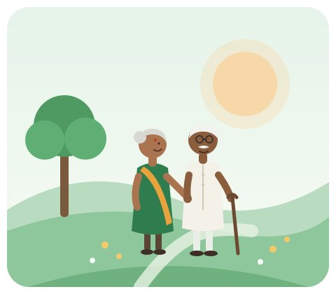

Pain and symptom relief
Managing pain, breathlessness, nausea, sleeplessness and other distressing symptoms, including with medicines such as oral morphine where needed.
A guide for patients and families
Palliative care relieves pain and suffering, supports families, and helps people live with comfort and dignity at any stage of a serious illness, not only at the end of life.

It is care that focuses on the whole person and their family, alongside any treatment for the illness itself.
Managing pain, breathlessness, nausea, sleeplessness and other distressing symptoms, including with medicines such as oral morphine where needed.
Space to talk about fears, hopes and wishes, with counselling for patients and their families.
Clear conversations about the illness, treatment choices and what matters most to the patient.
Many teams visit patients at home and train family members in day-to-day care.
No. It can begin at diagnosis and run alongside treatment such as chemotherapy or dialysis. Its goal is the best possible quality of life.
Early palliative care often helps the most, because symptoms and stress are managed before they become a crisis.
When prescribed and monitored by a trained doctor for pain, morphine is safe and effective. Fear of morphine is one of the main reasons people in India go without pain relief.
Anyone with a serious, long-term or life-limiting illness can benefit, whatever the diagnosis.
Access varies sharply between states. Kerala's community-led model, built around trained volunteers and local self-government, is often held up as an example, and places most of its residents within a short trip of a palliative care centre. In many other states, patients still travel long distances for basic pain relief.
The government reports that the NPPC has expanded to around 600 districts, and palliative medicine is a recognised medical specialty with a three-year MD programme. Even so, trained staff and steady access to essential pain medicines remain the biggest gaps.
Start by asking the treating doctor or the nearest district hospital about palliative care services. These organisations can also guide patients and families:
National non-profit based in Thiruvananthapuram. Runs a free palliative care telehealth helpline for patients, families and health workers anywhere in India.
palliumindia.org →The national professional body. Its site lists news, training and services across the country.
palliativecare.in →Delhi-based organisation offering free home-based palliative care and counselling.
cansupport.org →Hospice in Bengaluru providing free care to people with advanced cancer.
karunashraya.org →Helpline numbers change, so please check each organisation's official website for current contact details. In a medical emergency, call 112.